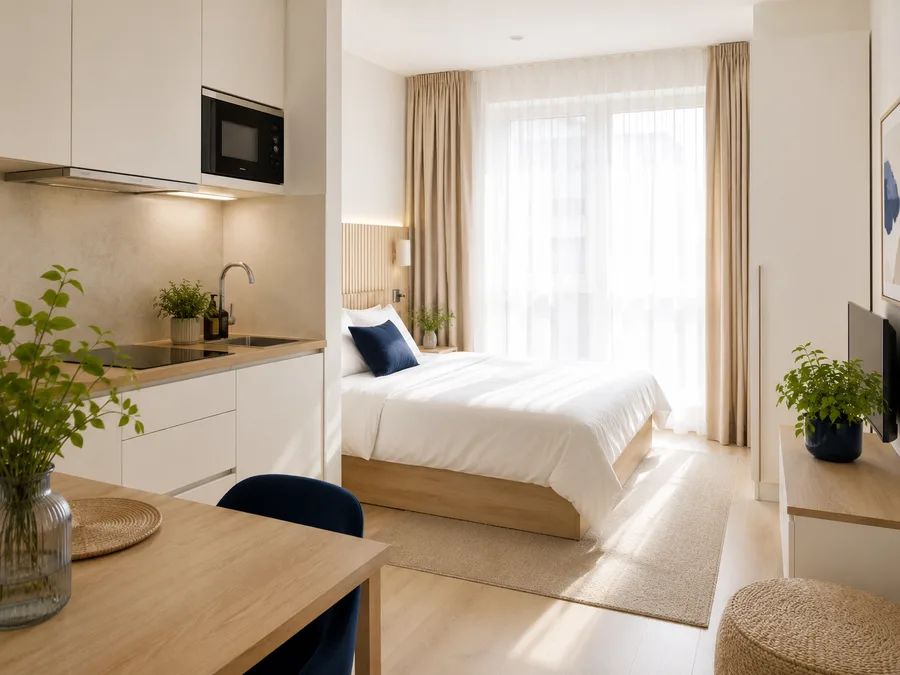
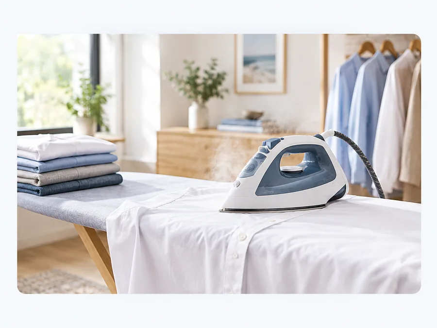

Upratovanie v Bratislave 3 hodiny za 79,90 €Kúpite si hodiny — a čomu sa budeme venovať, poviete vy.
Prídeme s vlastnými prostriedkami, poviete nám priority a my ich odrobíme. Bez obhliadky, cena je známa vopred.
5,0 33 recenzií na Google Pozrieť →Koľko hodín potrebujete?
Cena je konečná. Prostriedky, umytie okien aj doprava sú v nej.
Mini 3 hodiny 79,90 € Komfort 4 hodiny 99,90 € Klasik 6 hodín 139,90 € Maxi 8 hodín 169,90 € Maxi + tepovanie 8 h + 1 h 199,90 €Recenzie
Naši zákazníci povedali
Žiadne zdĺhavé objednávanie ani zbytočné obhliadky vopred — jednoducho prišli, upratali a výsledok bol perfektný. Stala som sa ich pravidelnou zákazníčkou a firmu som odporučila aj u nás v práci.Soňa M.
Hľadala som spoľahlivú upratovaciu firmu a toto bola trefa do čierneho. Pani upratovačka odviedla neskutočne skvelú prácu — dala si záležať aj na detailoch. Je skvelý pocit vrátiť sa do dokonale čistého domova.Alexandra A.
S upratovaním som bol veľmi spokojný. Všetko bolo urobené precízne, dôkladne a podľa mojich predstáv. Oceňujem profesionálny prístup, príjemné vystupovanie a dôraz na detaily.Dan A.
Pomer cena a kvalita výborná. Poctivé umývanie a upratovanie, bola som veľmi spokojná.Natália F.
Profesionálny prístup, rýchla komunikácia a kvalitne odvedená práca.Marek R.
Prečo práve my
Štyri veci, na ktoré sa ľudia pýtajú najviac
Chodí k vám ten istý človek
Nie upratovačky z inzerátu, ktoré sa menia od návštevy k návšteve. Pri pravidelnom upratovaní váš byt už pozná.
Nemusíte byť doma
Stačí nás pustiť dnu a povedať priority. Potom môžete odísť za svojím a vrátiť sa, keď je hotovo.
Bez skrytých poplatkov
Čo si dohodneme, to zaplatíte. Cenu poznáte pred rezerváciou a na faktúre sa neobjaví nič navyše.
Zrušenie zdarma do 24 h
Odkaz na zrušenie máte priamo v potvrdzovacom e-maile a peniaze vrátime v plnej výške. Pri neskoršom zrušení vraciame polovicu.
Transparentné ceny
Platíte za hodiny, nie za metre

Upratovanie Byt alebo dom, 3 až 8 hodín od 79,90 € Tepovanie
Sedačky, koberce a matrace
55 € / hod
Tepovanie
Sedačky, koberce a matrace
55 € / hod

Žehlenie Košele, bielizeň aj uteráky od 49,90 € Poukážky Viac upratovaní za lepšiu cenu Ušetrite až 39,70 €Celý cenník a doplnkové služby →
Kancelárie, Airbnb a špeciálne priestory riešime na mieru — pošlite nezáväzný dopyt
Ako to funguje
Od rezervácie po Poriado(k) za tri kroky
- Vyberiete balík a termínOnline, bez obhliadky. Potvrdenie máte okamžite.
- Poviete nám priorityČo je najdôležitejšie upratať — tomu sa venujeme najviac.
- Prídeme a upracemeS vlastnými čistiacimi prostriedkami a vybavením.